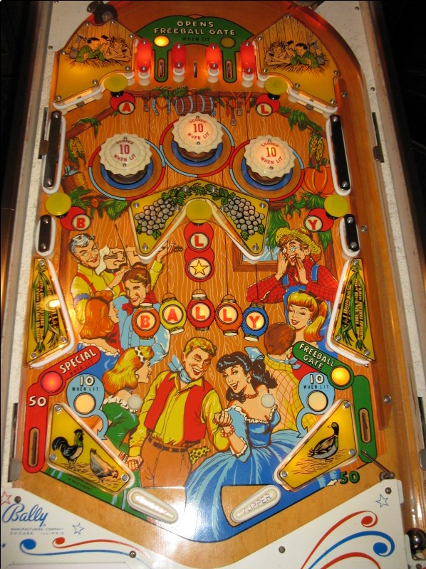

Harvest is the replay version. Hay-Ride is the add-a-ball version. The two games have identical playfields. Relevant differences in rules are explained throughout the guide.
Top lanes score 10 points. Either the left or right top lane is lit, alternating when the ball drains or goes down an out lane. Making the lit top lane opens the Freeball Gate in the right out lane for the rest of the ball; it only closes when the ball drains, and stays open otherwise, even when used.
Pop bumpers and slingshots score 1 point, or 10 when lit. They go on and off pseudo-randomly every time a scoring switch is made in the game. The bumpers and slingshots are governed by a dynamic difficulty system, common in many mid-1960s Bally games, that increases the game's difficulty when replays are won and slightly decreases the game's difficulty each time a game ends. The higher the game's difficulty, the less frequently the pops and slingshots are lit.
Letters in B-A-L-L-Y are collected from mushroom bumpers around the playfield, which score 10 points. B is in the middle left; A is in the top left; the first L is in the center, with slanted walls on either side; the second L is in the top right; the Y is in the middle right. Be mindful shooting the first L, as even slight misses to either side can cause the ball to rebound off the diagonal walls and go down the center drain incredibly quickly.
Spelling A-L-L opens the Freeball Gate in the right out lane, if it was not lit already by the top lanes.
Spelling B-A-L-L or A-L-L-Y lights the Star at the center mushroom bumper; hitting this bumper when the Star is lit scores 100 points (Harvest) or an extra ball (Hay-Ride) and lights a pumpkin on the backglass. Pumpkin progress is a carryover award that persists across games. Lighting the 10th pumpkin resets the sequence and awards 2 free games (Harvest) or 2 extra balls (Hay-Ride).
Spelling B-A-L-L-Y in full also lights the left out lane for Special, which scores 1 free game (Harvest) or 2 extra balls (Hay-Ride).
Out lanes score 50 points. There are no in lanes. 2-inch mini flippers are used in the conventional position.
Unusually for an add-a-ball game, Hay-Ride has a match feature. Matching the last digit of your score to the lit number at the end of the game adds 1 extra ball to the next game. Hay-Ride can count up to 10 extra balls at a time.
The below picture of Harvest's playfield was taken from the Internet Pinball Database, where it was originally provided by Mike Karsen.
